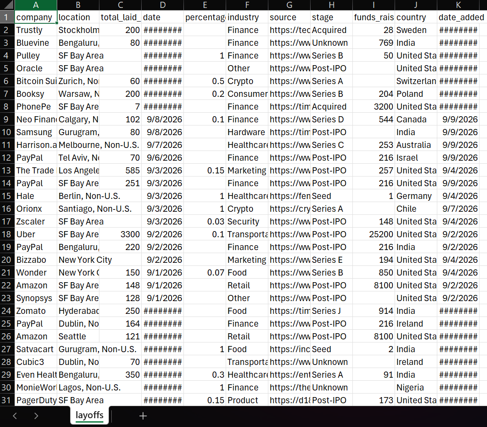
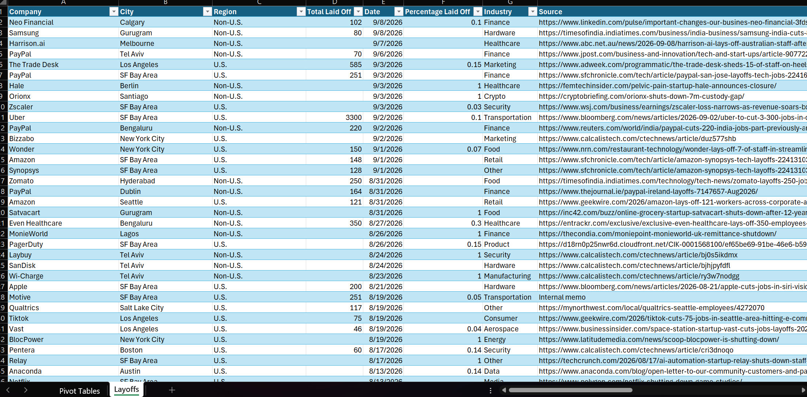
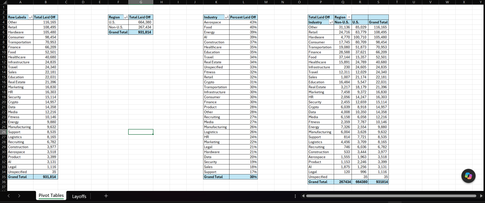

Excel · Data Cleaning
I wanted a project that used real data, not something built to look messy on purpose. I found a dataset on Kaggle tracking global company layoffs since 2020, about 4,600 rows pulled from real news sources. It was a good fit because it was genuinely imperfect in a few specific ways, not chaotic everywhere, which meant I had to actually look at the data before deciding what to fix.

Before: raw dataset, location as one combined field
My first instinct with any new dataset is to check for duplicates before touching anything else. I ran Remove Duplicates across every column and came back clean, no duplicates. That is a real finding worth noting, not a skipped step. Confirming a dataset is already clean on one front is just as useful as fixing one that is not.
The location data came in as one field, something like "Calgary, Non-U.S." I split it into two columns, City and Region, using Text to Columns with a comma delimiter. Simple move, but it is the same logic behind a lot of real cleaning work: take one messy field and turn it into two usable ones.
After the split, I found a leading space in front of every "Non-U.S." value, invisible on screen but enough to make Excel treat "Non-U.S." and " Non-U.S." as two different values. I caught it because a pivot table on Region was showing more categories than it should have. Fixed it with Find and Replace.
I also had a handful of rows where the original location text did not follow the standard city, country format. A few cities like Melbourne and New Delhi had a state or another city name sitting in the Region column instead of "U.S." or "Non-U.S." I traced each one back individually and corrected them by hand. It is a small thing, but it is the kind of edge case that only shows up once you actually look at your output instead of trusting the split worked everywhere.

After: cleaned Table with City / Region split, headers formatted
Once the data was clean, I built four pivot tables, each answering a different question:

Pivot tables: Industry, Region, Average % by Industry, and the Industry × Region cross tab
Anyone can clean a dataset that was built to be messy. This one forced me to slow down, check my assumptions, and catch problems a formula alone would not have flagged. That is closer to what real data work actually looks like.